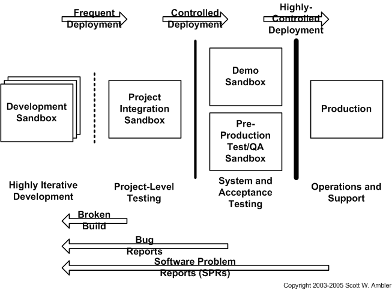
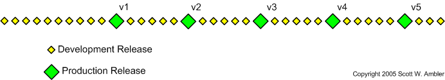
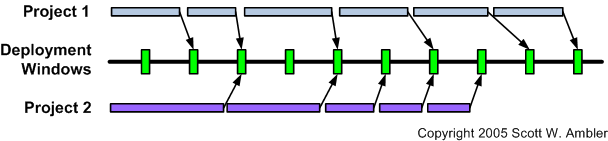

Releases
| Home | Phases | Disciplines | Milestones | Roles | Deliverables | Guidance | Help |
|
|
Releases |
|
||||||||
|
||||||||||
Project teams following the AUP deliver incremental releases over time. In other words, instead of the "big bang" approach where you deliver software all at once you instead release it into production in portions (e.g. version 1, then version 2, and so on).
AUP teams typically deliver development releases at the end of each iteration into pre-production testing and/or demo staging area(s) (see Figure 1). A development release of an application is something that could potentially be released into production if it were to be put through your pre-production quality assurance (QA), testing, and deployment processes. Granted, this won’t be true earliest development releases because you won’t have delivered sufficient functionality to make deployment worth your while. Furthermore at the beginning of a project you often stub out interfaces to shared services – such as security, persistence, or even reusable legacy functionality – so technically you still have some clean up to do before you’re ready to release to production.
Figure 1. Sandboxes.

A good process pattern to adopt is that if you have a new version of working software then you should consider deploying it at least into the pre-production/demo environments to share it with others. The sooner it gets into the hands of people outside of your team, the sooner you will start to get feedback from others.
In Figure 2 you see that the first production release often takes longer to deliver than subsequent releases; in the first release of a system you likely need to get a lot of the “plumbing” in place and your team likely hasn’t “gelled” yet enabling them to become efficient at collaboration. The first production release may take you twelve months to deliver, the second release nine months, and then other releases are delivered every six months. An early focus on deployment issues not only enables you to avoid problems it also allows you to take advantage of your experiences during development. For example, when you are deploying software into your staging area you should take notes of what works and what doesn’t, notes that can serve as the backbone of your installation scripts.
Figure 2. Incremental releases over time.

Figure 3 depicts how you will need to schedule the deployment of your application into pre-defined deployment windows, shown in green. A deployment window, often called a release window, is a specific point in time where it is permissible to deploy a system into production. Your operations staff will very likely have strict rules regarding when application teams may deploy systems. Figure 3 shows how two project teams schedule the deployment of their changes (including database refactorings) into available deployment windows. Sometimes there is nothing to deploy, sometimes one team has changes, and other times both teams have schema changes to deploy. You will naturally need to coordinate with any other teams which are deploying during the same deployment window. This coordination will occur long before you go to deploy, and frankly the primary reason why your pre-production test environment exists is to provide a sandbox in which you can resolve multi-system issues.
Figure 3. Scheduling your release into deployment windows.

 |
Page last updated: May 13, 2006 This page is tailored with permission from Ambysoft Inc.'s Agile UP Product Original page is Copyright © 2006 Ambysoft Inc. |